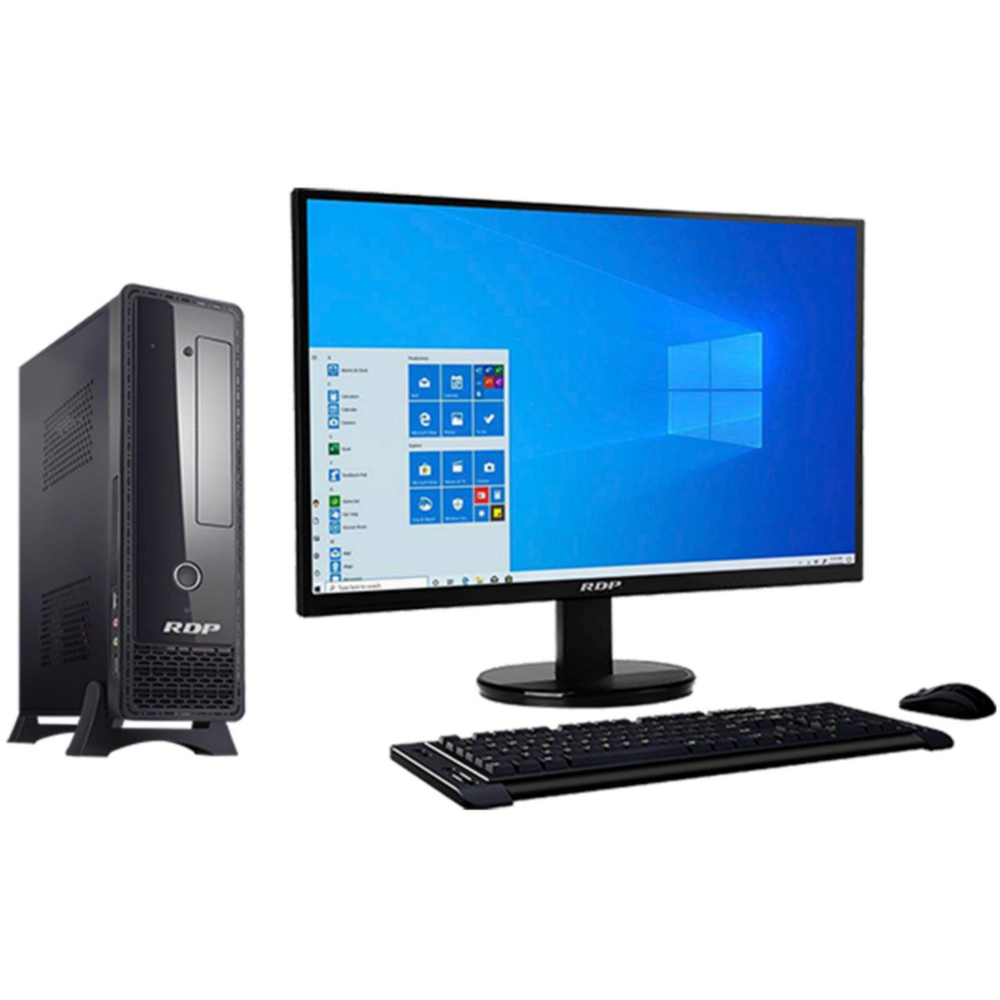

الجيل الأول (1940 - 1956)
اعتمدت الحاسبات في هذا الجيل على الأنابيب المفرغة التي كانت تستخدم لإجراء العمليات الحسابية. كانت الحواسيب ضخمة جدًا وتحتاج إلى مساحة كبيرة. كما كانت تستهلك كمية هائلة من الطاقة الكهربائية.
تستخدم الحواسيب في هذا الجيل بشكل رئيسي لأغراض عسكرية وعلمية، وكانت البرمجة تتم بلغة الآلة فقط. كان الحاسوب ENIAC واحدًا من أشهر الحواسيب في هذا الجيل، وكان يتطلب فريقًا ضخمًا من المهندسين لتشغيله.
الجيل الثاني (1956 - 1963)
في هذا الجيل، تم استبدال الأنابيب المفرغة بالترانزستورات. هذا التحول أدى إلى تقليل حجم الحاسوب بشكل كبير، وزيادة كفاءته، وتقليل استهلاك الطاقة. كما أن الأجهزة أصبحت أكثر استقرارًا.
ظهرت في هذا الجيل لغات البرمجة المتطورة مثل Fortran وCOBOL، مما سهل عملية البرمجة. استخدم هذا الجيل في الأبحاث الأكاديمية والصناعات الكبرى.
الجيل الثالث (1964 - 1971)
تميز هذا الجيل باستخدام الدوائر المتكاملة (ICs)، مما جعل الحواسيب أصغر حجمًا، أسرع، وأقل تكلفة. كما أن نظام التشغيل أصبح أكثر تطورًا، وأصبحت الحواسيب أكثر قدرة على المعالجة المتعددة.
ظهرت في هذا الجيل أنظمة تشغيل مثل UNIX، مما ساعد في تسهيل إدارة الحواسيب وتشغيل التطبيقات المتعددة. بدأت الحواسيب في هذا الجيل بالانتشار في الشركات الكبرى والصناعات.
الجيل الرابع (1971 - 1989)
شهد هذا الجيل ثورة حقيقية في عالم الحاسبات بسبب ظهور المعالجات الدقيقة (Microprocessors). كان هذا الابتكار سببًا رئيسيًا في ظهور الحاسوب الشخصي (PC)، الذي أصبح متاحًا بشكل كبير للمنزل والمكاتب الصغيرة.
تم تطوير أنظمة تشغيل مثل Windows وMS-DOS في هذا الجيل، مما جعل الحاسوب أسهل في الاستخدام وأكثر انتشارًا بين الأفراد والشركات.
الجيل الخامس (1989 - حتى الآن)
يركز هذا الجيل على الذكاء الاصطناعي وتكنولوجيا المعالجة المتقدمة مثل تعلم الآلة والشبكات العصبية. يتم استخدام هذه التقنيات في العديد من التطبيقات مثل السيارات الذاتية القيادة، والرعاية الصحية، والأبحاث العلمية.
في هذا الجيل، شهدنا ظهور الحوسبة السحابية والأجهزة الذكية مثل الهواتف الذكية، مما سمح للأفراد بإنجاز المهام باستخدام أجهزة محمولة ومتصلة بالإنترنت في أي وقت ومن أي مكان.
أنواع الحاسبات
هناك العديد من أنواع الحاسبات التي تتنوع في حجمها، استخدامها، وأغراضها. إليك أبرز الأنواع:
الحاسوب الشخصي (PC)
الحاسوب الشخصي هو جهاز يستخدمه الأفراد لأغراض متعددة مثل العمل والترفيه والتعليم. يمتاز بالحجم الصغير نسبيًا ويتميز بسهولة استخدامه. يشمل هذا النوع الحواسيب المكتبية والمحمولة.
الحاسوب المحمول (Laptop)
الحاسوب المحمول هو جهاز خفيف الوزن يمكن حمله بسهولة. يتميز ببطارية مدمجة تجعله مثاليًا للاستخدام في الأماكن التي تفتقر إلى الطاقة الكهربائية. يتميز بالمرونة ويسمح للمستخدمين بالعمل في أي مكان.
الحاسوب اللوحي (Tablet)
الحاسوب اللوحي هو جهاز يحتوي على شاشة تعمل باللمس ويتميز بالقدرة على تنفيذ العديد من المهام مثل تصفح الإنترنت، مشاهدة الفيديوهات، وتحميل التطبيقات. يعد مثاليًا للاستخدام الشخصي والتعليم.
الحاسوب العملاق (Supercomputer)
الحاسوب العملاق هو جهاز قوي للغاية يستخدم في التطبيقات التي تتطلب قدرة معالجة هائلة مثل الأبحاث العلمية، المحاكاة الهندسية، والبيانات الضخمة. يتضمن هذا النوع من الحواسيب آلاف المعالجات المتوازية.